The Story
On February 28, 2017, an Amazon engineer mistyped a command during routine S3 maintenance in us-east-1 and accidentally removed more servers than intended. The cascading failure took down a huge swath of the internet — Slack, Trello, Quora, and thousands of sites that depended on S3. But the darkest irony: the AWS status dashboard itself was hosted on S3 and went down too, so Amazon couldn’t even report that they were experiencing an outage. The incident became the canonical argument for observability systems that are independent of the infrastructure they monitor. If your monitoring goes down with your system, you don’t have monitoring — you have a co-passenger.
1. Why Observability Exists
In a monolithic application, you can attach a debugger, step through code, and inspect state. In a distributed system with hundreds of services, that approach is fundamentally impossible. A single user request may traverse dozens of services, multiple databases, message queues, and caches before a response is returned. When something goes wrong, no single service has the full picture.
Observability is the ability to understand the internal state of a system by examining its external outputs. The term comes from control theory: a system is “observable” if you can determine its internal state from its outputs alone.
This is fundamentally different from monitoring. Monitoring checks for known failure modes — you define thresholds, and alerts fire when those thresholds are crossed. Monitoring answers “is the system broken?” Observability answers “why is the system broken?” and, critically, “why is it broken in a way I have never seen before?”
Monitoring is necessary but insufficient. You cannot anticipate every failure mode in a complex distributed system. Network partitions, clock skew, cascading retries, garbage collection pauses, connection pool exhaustion, slow downstream dependencies — the failure space is vast and combinatorial. Observability gives you the tools to investigate novel failures without needing to have predicted them in advance.
2. The Three Pillars
Observability rests on three complementary signal types. Each answers different questions, and none is sufficient alone.
| Signal | What It Captures | Question It Answers |
|---|---|---|
| Metrics | Numeric measurements aggregated over time | ”What is the system doing right now?” |
| Logs | Discrete event records with context | ”What happened during this specific event?” |
| Traces | End-to-end request path across services | ”Where did this request spend its time?” |
The real power comes from correlating all three: a metric alert tells you something is wrong, a trace shows you which service is slow, and logs from that service reveal the root cause.
3. Metrics: Quantifying System Behavior
3.1 The Four Metric Types
Every metrics system — whether Prometheus, Datadog, or CloudWatch — builds on four fundamental types. Understanding them from first principles prevents misuse.
Counter — a monotonically increasing accumulator. It only goes up (or resets to zero on process restart). You never read a counter’s raw value; you compute the rate of change over a time window. Examples: total HTTP requests served, total errors, total bytes transferred.
Why monotonic? Because in a distributed system, scrapers may miss a scrape interval. If you stored deltas, a missed scrape means lost data. With a monotonic counter, you can always compute the rate between any two successful scrapes, and missed scrapes only reduce resolution, not accuracy.
Gauge — a point-in-time sample that can go up or down. It represents the current state of something. Examples: current queue depth, JVM heap usage, number of active connections, CPU utilization.
Gauges are fragile because you only see the value at scrape time. If your queue spikes to 10,000 between scrapes but returns to 100 by scrape time, you miss the spike entirely. This is why gauges are best for slowly-changing values, and rapidly-changing quantities are better served by counters or histograms.
Histogram — captures the distribution of observed values by counting observations into configurable buckets. For example, a latency histogram with buckets at 10ms, 50ms, 100ms, 250ms, 500ms, and 1000ms counts how many requests fell into each range.
Histograms are the workhorse of latency measurement. They allow you to compute arbitrary percentiles server-side at query time and, critically, they are aggregatable — you can sum histogram buckets across instances and still compute valid percentiles from the aggregate.
Summary — computes percentiles (quantiles) client-side before export. A summary pre-calculates values like p50, p95, and p99 within each application instance.
Summaries seem convenient but have a fatal flaw: you cannot aggregate pre-computed percentiles across instances. If you have 10 instances each reporting p99 = 200ms, the global p99 is not 200ms. It could be much higher if the slowest 1% of requests cluster on specific instances. This is the aggregation problem, and it makes summaries unsuitable for most production use cases. Prefer histograms.
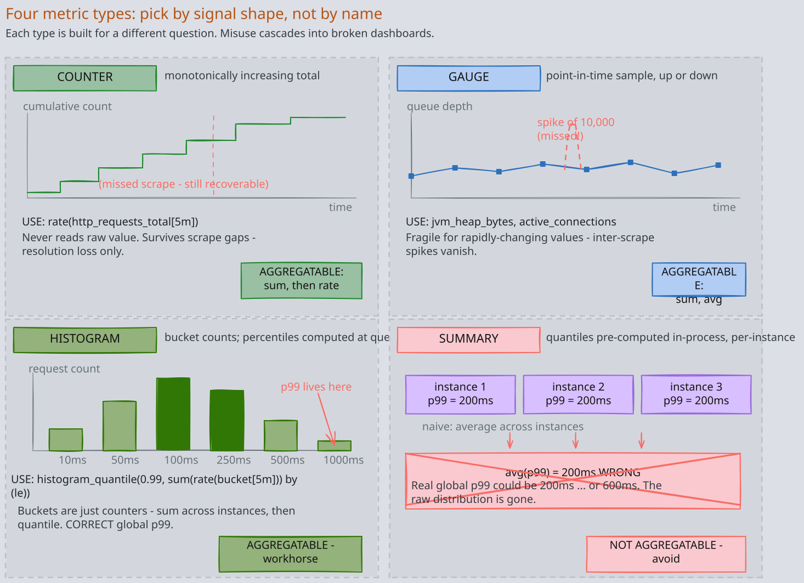
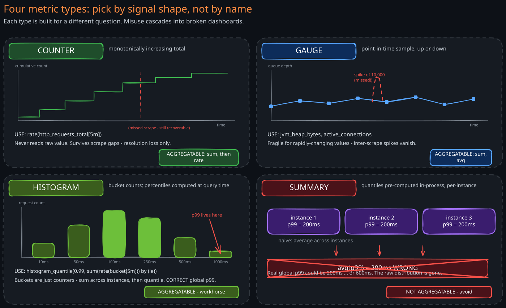
3.2 Why Percentiles Matter More Than Averages
An average latency of 100ms tells you almost nothing. Consider two systems:
- System A: every request takes exactly 100ms (average = 100ms)
- System B: 99% of requests take 50ms, 1% take 5,100ms (average = 100ms)
Same average, radically different user experience. System B has a devastating tail latency problem affecting 1 in 100 users.
Percentiles reveal the shape of the distribution. The p99 (99th percentile) tells you: “99% of requests are faster than this value.” For user-facing systems, the p99 and p99.9 matter enormously because your heaviest users — those making the most requests — are statistically most likely to hit tail latency at least once per session.
Amazon found that every 100ms of latency cost them 1% of sales. That cost is driven by tail latency, not average latency.
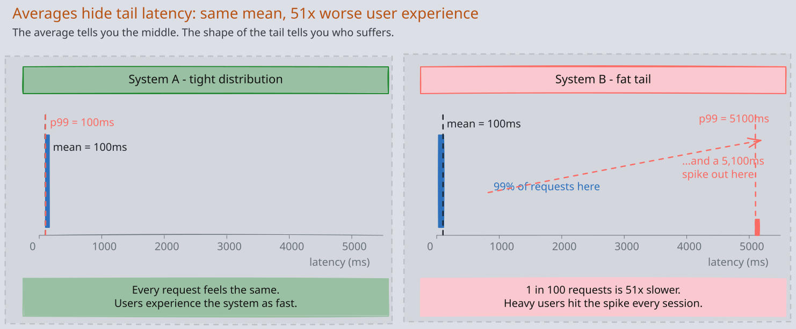
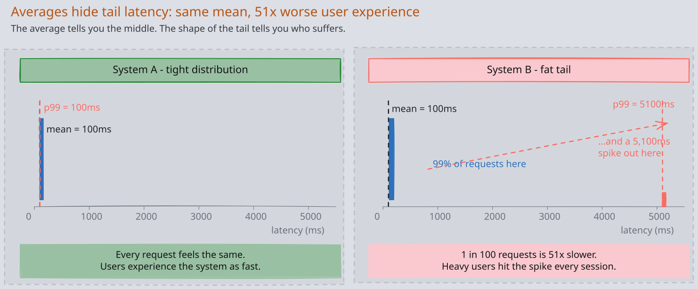
3.3 The Aggregation Problem
This deserves emphasis because it is a common source of incorrect dashboards.
Percentiles are not additive. You cannot average percentiles across time windows or across instances. If instance A reports p99 = 150ms and instance B reports p99 = 300ms, the combined p99 is somewhere between 150ms and 300ms, but you cannot determine where without the raw distributions.
The correct approach is to aggregate the underlying histogram buckets (which are simple counters and therefore additive), then compute percentiles from the aggregated histogram. This is why Prometheus histograms use cumulative bucket counters and why the histogram_quantile() function operates on aggregated bucket data.
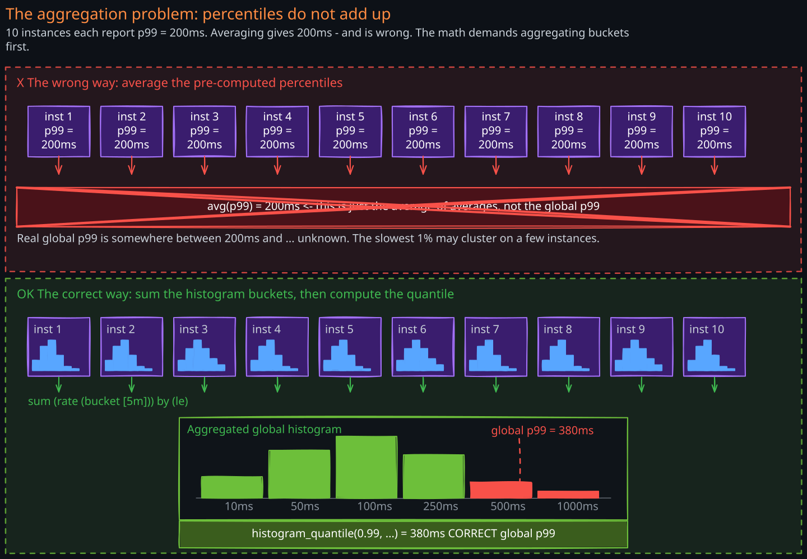
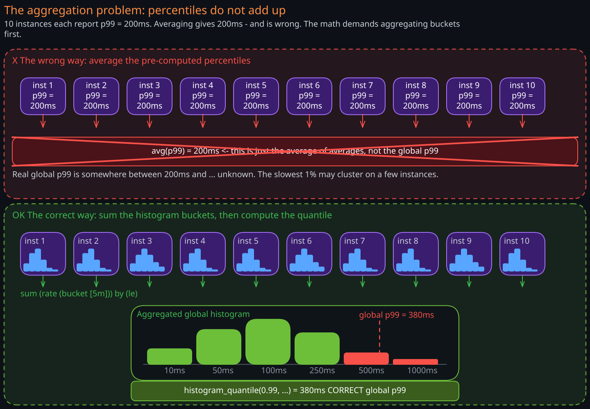
4. Logs: Recording Discrete Events
4.1 Structured vs. Unstructured Logging
Unstructured logs are human-readable text:
2024-03-15 14:23:01 ERROR Failed to process order 12345 for user abc-789: connection timeout to payment service
At small scale, this works. At the scale of thousands of services producing millions of log lines per second, unstructured logs become nearly useless because:
- Parsing is brittle. Extracting the order ID requires regex patterns that break when log formats change.
- Querying is slow. Finding all errors for a specific user requires full-text search across terabytes of text.
- Aggregation is impossible. You cannot count “payment service timeouts per minute” without parsing every line.
Structured logs solve this by encoding events as key-value pairs, typically in JSON:
{
"timestamp": "2024-03-15T14:23:01Z",
"level": "ERROR",
"service": "order-service",
"trace_id": "abc123def456",
"user_id": "abc-789",
"order_id": "12345",
"error": "connection_timeout",
"downstream_service": "payment-service",
"latency_ms": 5000
}Now every field is independently queryable and aggregatable. You can ask: “show me all ERROR logs from order-service where downstream_service = payment-service in the last hour, grouped by user_id.” This is the difference between debugging by reading logs and debugging by querying logs.
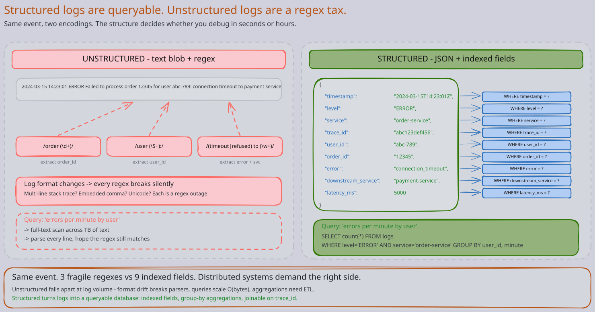
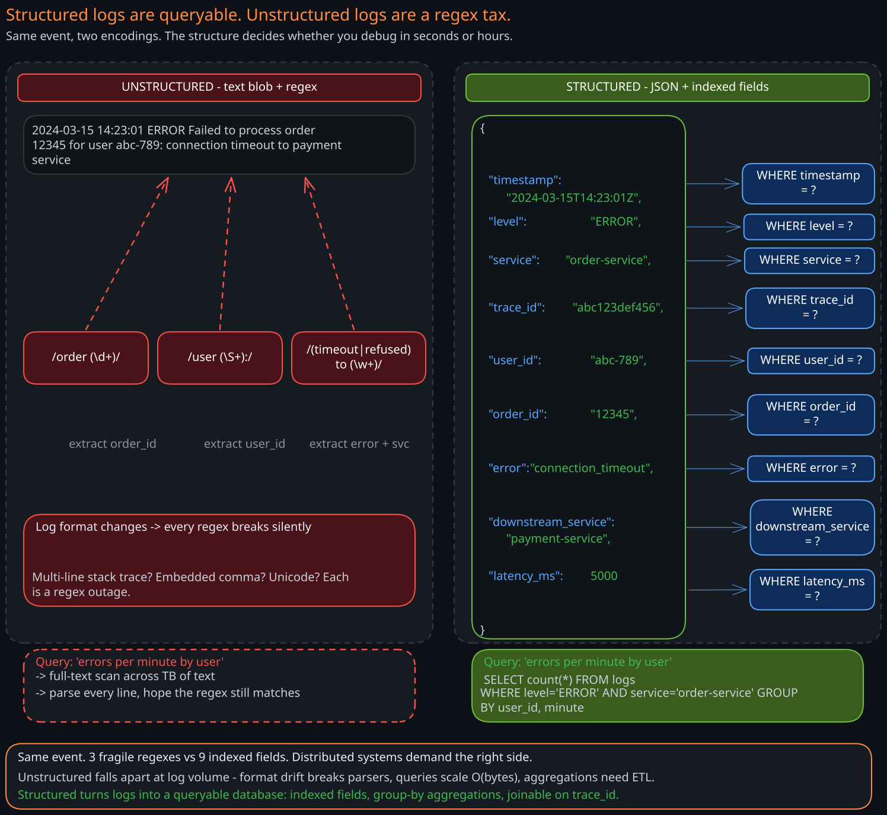
4.2 Log Levels and When to Use Them
Log levels are a severity taxonomy. Using them correctly is the difference between actionable logs and noise.
| Level | When to Use | Example |
|---|---|---|
| FATAL | Process is about to crash; unrecoverable | Cannot bind to port, out of memory |
| ERROR | Operation failed; requires investigation | Payment charge failed, database write rejected |
| WARN | Degraded but functional; may become an error | Retry succeeded after 2 attempts, cache miss rate high |
| INFO | Normal operational events worth recording | Request processed, job completed, config loaded |
| DEBUG | Detailed diagnostic information | SQL query text, request/response payloads |
| TRACE | Extremely fine-grained, step-by-step flow | Method entry/exit, variable state |
A common mistake is logging too much at INFO level. In production, DEBUG and TRACE should be off by default and enabled dynamically (per-service or per-request) for targeted investigation.
4.3 The Cost of High-Cardinality Logging
Every unique combination of field values in your logs is a “cardinality” dimension. Logging a unique request ID is fine — that is expected high cardinality. But logging unbounded user input, full request bodies, or UUIDs as indexed fields in your log aggregation system creates cardinality explosions that consume storage and degrade query performance.
At scale, logging costs are dominated by ingestion volume and index cardinality. A single misconfigured service logging full HTTP request bodies at INFO level can generate more log volume than the rest of the organization combined. Log sampling, level management, and field selection are not optional — they are critical operational controls.
5. Traces: Following Requests Across Boundaries
5.1 The Problem Traces Solve
In a monolith, a stack trace tells you exactly what happened. In a microservices architecture, a single user request might flow through 15 services. When that request is slow, you need to know: which service introduced the latency? Was it the service itself, or a downstream dependency? Was it a database query, a network call, or garbage collection?
Distributed tracing reconstructs the full request path across service boundaries, with timing information for each step.
5.2 The Span Model
A trace represents a single end-to-end request. It is composed of spans, where each span represents a unit of work: an HTTP handler, a database query, a message publish, a cache lookup.
Each span carries:
- Trace ID — shared by all spans in the same request, used to reconstruct the full trace
- Span ID — unique identifier for this specific span
- Parent Span ID — links this span to the span that initiated it, forming a tree
- Operation name — what this span represents (e.g.,
GET /api/orders) - Start time and duration — when the work began and how long it took
- Tags/attributes — key-value metadata (e.g.,
http.status_code=500,db.statement=SELECT...) - Status — whether the operation succeeded or failed
The parent-child relationship creates a tree (or more precisely, a directed acyclic graph) that mirrors the request’s execution path. The root span represents the initial entry point, and leaf spans represent the terminal operations.
5.3 Context Propagation
The central challenge of distributed tracing is context propagation — how does Service B know that its work is part of the same trace that started in Service A?
The answer is: trace context is injected into the transport layer at every boundary crossing.
For HTTP calls, trace context travels as request headers. The W3C Trace Context standard defines two headers:
traceparent: contains the trace ID, parent span ID, and trace flagstracestate: carries vendor-specific context (e.g., sampling decisions)
Format of traceparent:
traceparent: 00-4bf92f3577b34da6a3ce929d0e0e4736-00f067aa0ba902b7-01
| | | |
version trace-id (32 hex) parent-id (16 hex) flags
For message queues like Kafka, trace context is injected into message headers. The producing service writes traceparent into the Kafka message header, and the consuming service extracts it to continue the trace. This is how traces survive asynchronous boundaries.
For gRPC calls, trace context travels as metadata entries, following the same W3C standard.
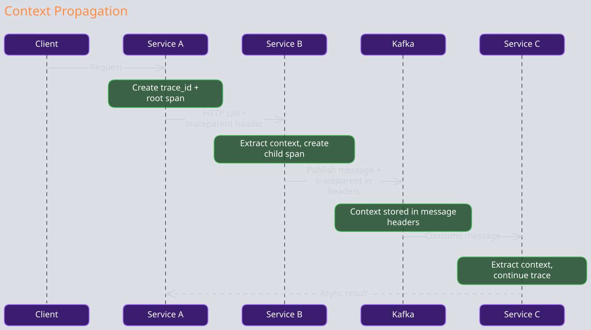
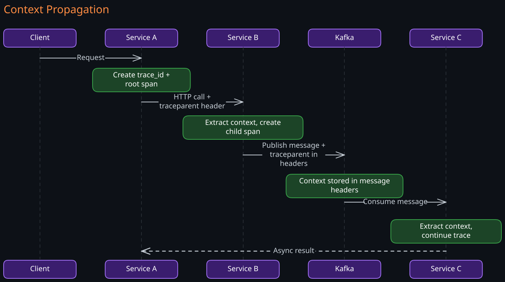
5.4 Why Sampling Is Necessary
A large-scale service might handle millions of requests per second. Storing a complete trace for every request — with potentially dozens of spans each — is prohibitively expensive in both network bandwidth and storage.
Sampling strategies reduce the volume while preserving debugging utility:
Head-based sampling decides at the entry point whether to trace this request (e.g., trace 1% of all requests). It is simple but blind — it does not know if the request will be interesting (slow, errored) before deciding.
Tail-based sampling collects all spans temporarily, then decides after the request completes whether to keep the trace. This lets you keep 100% of error traces and slow traces while discarding routine ones. The tradeoff is complexity: you need a component that buffers complete traces before making the sampling decision, which requires significant memory and adds latency to the pipeline.
Adaptive sampling adjusts the sampling rate dynamically based on traffic volume, error rates, or other signals. Low-traffic services might be sampled at 100%, while high-traffic services sample at 0.1%.
In practice, production systems use a combination: tail-based sampling for error and latency outliers, head-based sampling at a low rate for baseline coverage.
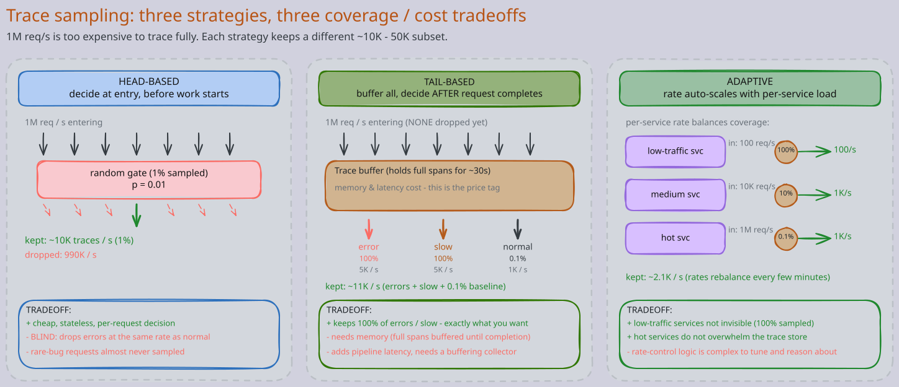
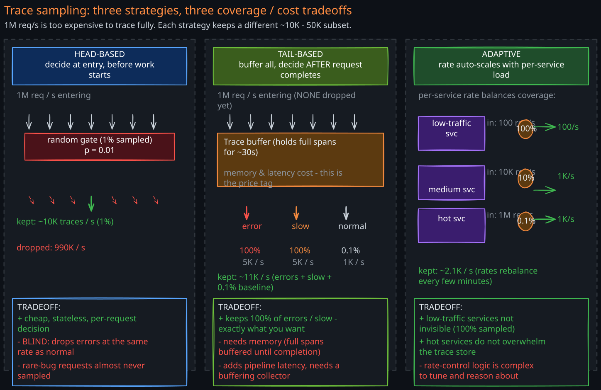
6. OpenTelemetry: Vendor-Neutral Instrumentation
6.1 The Problem OpenTelemetry Solves
Before OpenTelemetry, every observability vendor had its own instrumentation SDK. If you instrumented your code with Datadog’s SDK and later wanted to switch to Grafana Cloud, you had to re-instrument every service. This vendor lock-in was expensive and discouraged adoption.
OpenTelemetry (OTel) provides a single, vendor-neutral API and SDK for generating metrics, logs, and traces. You instrument once, and export to any backend. It is the second most active CNCF project after Kubernetes, with broad industry adoption.
6.2 Architecture
The collector sits between language-specific SDKs and pluggable backends. Apps speak one wire format (OTLP); the collector receives, processes, and fans the data out. The drama is the convergence-then-fan-out: switching from Datadog to Grafana Cloud becomes a collector config edit instead of reinstrumenting every service.
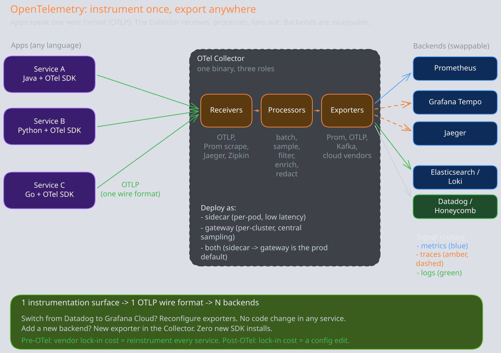
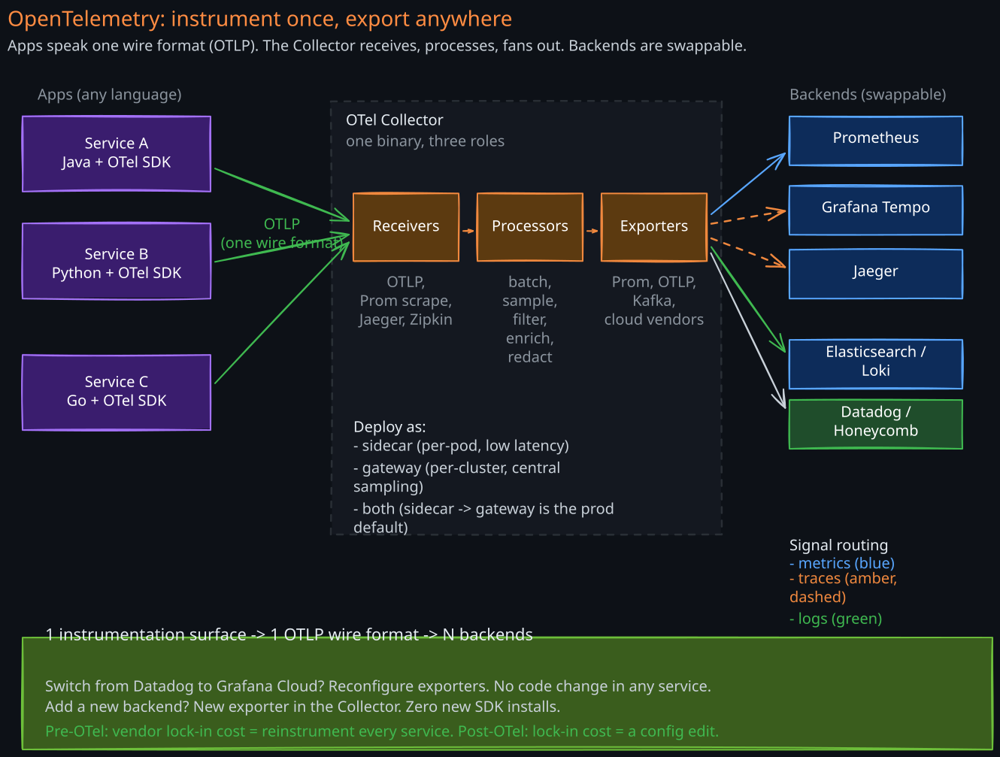
6.3 Key Components
SDKs are language-specific libraries that instrument your application code. They provide APIs for creating spans, recording metrics, and emitting logs. Auto-instrumentation agents (available for Java, Python, .NET, and others) can instrument common frameworks (HTTP clients, database drivers, message queue clients) without code changes.
OTLP (OpenTelemetry Protocol) is a standardized wire format for transmitting telemetry data. It supports gRPC and HTTP transports. Using a single protocol for all three signal types simplifies the data pipeline.
The Collector is the central processing component. It follows a pipeline architecture:
- Receivers accept data from applications (via OTLP, Prometheus scrape, Jaeger format, etc.)
- Processors transform, filter, batch, and enrich data (add service name, drop noisy spans, sample traces)
- Exporters send processed data to backends (Prometheus, Jaeger, Elasticsearch, cloud vendors)
The Collector can run as a sidecar (per-pod), as a gateway (per-cluster), or both. A common production pattern is: application SDKs send to a local sidecar Collector (low-latency, no network hop), which forwards to a gateway Collector (centralized processing, sampling decisions, export).
7. The End-to-End Observability Pipeline
7.1 From Instrumentation to Insight
Metrics storage typically uses Prometheus for short-term storage (15-30 days) with a long-term solution like Thanos, Cortex, or Mimir for historical data. Thanos adds global query federation (query across multiple Prometheus instances), high availability (deduplicated data from multiple replicas), and long-term storage (backed by object storage like S3).
Log storage typically uses Elasticsearch (with Kibana for visualization) or Loki (Grafana’s log aggregation system, which indexes labels but not log content, making it far cheaper to operate at scale).
Trace storage uses Jaeger, Grafana Tempo, or commercial solutions. Tempo is notable because it only indexes trace IDs and uses object storage for trace data, making it extremely cost-effective. The tradeoff is that you need a trace ID to find a trace — you cannot search by arbitrary span attributes without an additional index.
7.2 Correlation: The Multiplier
The real power of observability comes from correlating signals. The key mechanism is the trace ID — a single identifier that links metrics, logs, and traces for the same request.
In practice, this means:
- A metric alert fires: “p99 latency exceeded 500ms on order-service”
- You pivot to traces filtered by the same time window and service, looking for slow traces
- The trace shows that payment-service is the slow span
- You pivot to logs filtered by the trace ID from the slow trace
- The log reveals: “connection pool exhausted, waited 4500ms for available connection”
Without correlation, each step requires a separate investigation. With correlation, you navigate from alert to root cause in minutes.
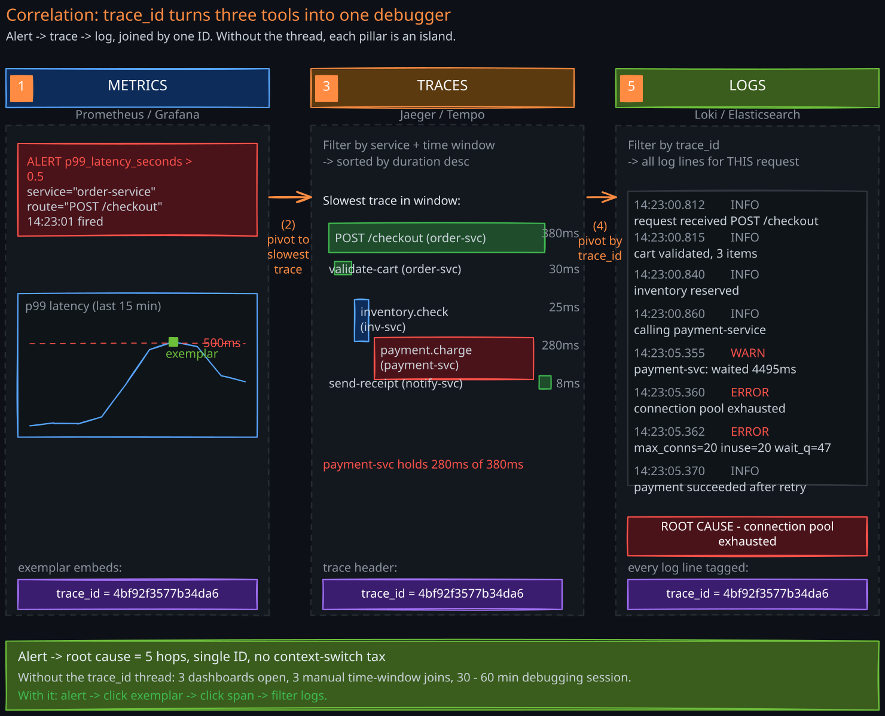
8. Observability Anti-Patterns
8.1 Alert Fatigue
When too many alerts fire — especially non-actionable ones — engineers learn to ignore all alerts. This is dangerous because real incidents get lost in the noise.
Root causes: alerting on symptoms rather than impact (CPU at 80% is not inherently bad if latency is fine), thresholds set too aggressively, alerts without clear ownership or runbooks.
Fix: alert on user-facing impact (error rate, latency percentiles, availability), not on system internals. Every alert should have a clear owner and a documented response procedure.
8.2 Dashboards Without Actionable Insights
A wall of dashboards showing dozens of graphs looks impressive but is useless if no one knows what “normal” looks like or what to do when a graph changes. This is the “dashboard museum” anti-pattern.
Fix: every dashboard should answer a specific question (“is the checkout flow healthy?”) and every panel should have defined thresholds that indicate when action is needed.
8.3 Missing Correlation Between Pillars
Having metrics in Prometheus, logs in Elasticsearch, and traces in Jaeger is worthless if there is no way to jump between them. Without trace IDs in logs, without exemplars linking metrics to traces, you have three isolated data silos instead of an observability system.
Fix: inject trace IDs into every log line. Use Prometheus exemplars to link metric samples to specific trace IDs. Build dashboards with deep links between visualization tools.
8.4 High-Cardinality Metric Labels
Adding unbounded labels to metrics (user ID, request ID, full URL path) causes a cardinality explosion. Each unique label combination creates a new time series. A metric with a user_id label across millions of users creates millions of time series, overwhelming Prometheus and degrading query performance.
Fix: use bounded, low-cardinality labels (HTTP method, status code class, service name). Move high-cardinality investigation to logs and traces, which are designed for it.
Revision Summary
- Observability vs. monitoring: monitoring checks known failure modes; observability enables investigation of unknown failures. In distributed systems, observability is essential because you cannot attach a debugger.
- Four metric types: counters (monotonic, compute rate), gauges (point-in-time, fragile), histograms (distributions, aggregatable), summaries (pre-computed percentiles, not aggregatable — avoid).
- Percentiles over averages: averages hide tail latency. p99 reveals the experience of the worst-affected users. You cannot average percentiles — aggregate histograms, then compute percentiles.
- Structured logging: JSON key-value logs are machine-parseable and queryable at scale. Unstructured text logs do not survive the transition to distributed systems.
- Distributed tracing: trace ID links all spans in a request. Context propagation via W3C
traceparentheader crosses HTTP, gRPC, and message queue boundaries. Sampling (head-based, tail-based, adaptive) is mandatory at scale. - OpenTelemetry: vendor-neutral instrumentation. Instrument once, export anywhere. Collector architecture: receivers, processors, exporters.
- Correlation is the multiplier: trace IDs in logs, exemplars in metrics, and deep links between tools turn three data silos into a debugging workflow.
- Anti-patterns: alert fatigue, dashboard museums, missing cross-pillar correlation, high-cardinality metric labels.
Deep Understanding Questions
- You have 20 instances of a service, each reporting p99 latency via a summary metric. Your dashboard averages these 20 values. Why is this number meaningless, and what architecture change would give you a correct global p99? Ans:
- A trace shows Service A calling Service B, which calls Service C. Service B’s span duration is 500ms, but Service C’s span is only 50ms. What could explain the remaining 450ms? How would you investigate? Ans:
- You implement tail-based sampling to keep 100% of error traces. During a cascading failure, every trace becomes an error trace. What happens to your tracing pipeline, and how would you design for this scenario? Ans:
- Your team adds a
user_idlabel to a Prometheus counter tracking API requests. The service has 10 million unique users. What breaks, and what is the correct way to investigate per-user request patterns? Ans: - Service A produces a Kafka message with a
traceparentheader. The consumer (Service B) processes the message 30 minutes later. Is the trace still valid? What operational challenges arise with long-lived traces that span asynchronous gaps? Ans: - You switch from unstructured to structured logging and your log storage costs triple. What happened, and what strategies would you use to control costs without losing observability? Ans:
- An on-call engineer receives 47 alerts in one hour. They acknowledge all of them without investigating. A real incident is missed. What systemic problems led to this outcome, and how would you redesign the alerting system? Ans:
- Your OpenTelemetry Collector runs as a gateway receiving data from 500 services. It becomes a bottleneck and starts dropping telemetry data. How would you redesign the collection topology for resilience? Ans:
- Head-based sampling at 1% means you trace 1 in 100 requests. A bug affects only requests with a specific header value, which occurs in 0.01% of traffic. What is the probability that your sampled traces capture this bug, and what sampling strategy would help? Ans:
- You have metrics in Prometheus, logs in Elasticsearch, and traces in Jaeger, but engineers still take 45 minutes to debug incidents. What is likely missing, and how would you close the gap? Ans: